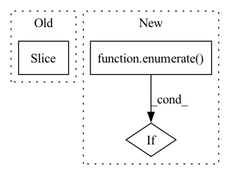

Pattern ID :40138

Before Change
X_train.append(self.X[i][: self.num_train_samples[i]])
else:
num_train_samples = self.num_train_samples[0]
X_train = self.X[:num_train_samples]
self.context_manager["X_train"] = X_train
X_train = self.context_manager["X_train"]
return X_train
After Change
else:
num_train_samples = self.num_train_samples[0]
X_train = []
for (i, flag) in enumerate(num_train_samples): // type: ignore
if flag is True:
X_train.append(self.X[i])
self.context_manager["X_train"] = X_train
X_train = self.context_manager["X_train"]
In pattern: SUPERPATTERN
Frequency: 3
Non-data size: 3
Instances
Fragment ID: 114078780
Project Name: takuyashintate/tsts
Commit Name: 860f8073d965cdae98be588f9d659ea4fedb0582
Time: 2021-09-26
Author: kmdbn2hs@gmail.com
File Name: tsts/solvers/forecaster.py
M Class Name: TimeSeriesForecaster
N Class Name: TimeSeriesForecaster
M Method Name: X_train(1)
N Method Name: X_train(1)
M Parent Class: Solver
N Parent Class: Solver
M File Name: tsts/solvers/forecaster.py
N File Name: tsts/solvers/forecaster.py
M Start Line: 209
M End Line: 210
N Start Line: 218
N End Line: 223
'>
Before Change
// fill backbone (N, C_alpha, C)
if n_aa <= 3:
new_coords[:, :, :n_aa] = predicted
// fill backbone (N, C_alpha, C, C_beta)
elif n_aa == 4:
new_coords[:, :, :3] = predicted[:, :, :-1]
After Change
coords, _ = mp_nerf.proteins.sidechain_fold(wrapper = new_coords[s, :-padding or None].detach(),
**scaffolds, c_beta = cum_atom_mask[4]==5)
// add detached scn
for i,atom in enumerate(atom_mask.tolist()):
if not atom:
new_coords[:, :-padding or None, i] = coords[:, i]
new_coords = new_coords.to(device)
'>
Fragment ID: 114078781
Project Name: lucidrains/alphafold2
Commit Name: af52b14b8943a19879fb5d9c6829f0d64d4717f9
Time: 2021-05-25
Author: ericalcaide1@gmail.com
File Name: alphafold2_pytorch/utils.py
M Class Name: AnonimousClass
N Class Name: AnonimousClass
M Method Name: sidechain_container(5)
N Method Name: sidechain_container(5)
M Parent Class:
N Parent Class:
M File Name: alphafold2_pytorch/utils.py
N File Name: alphafold2_pytorch/utils.py
M Start Line: 663
M End Line: 703
N Start Line: 659
N End Line: 697
'>
Before Change
while token_start_index != -1:
try:
token_start_index = text2tokens.index(ent2token[0], token_start_index)
if text2tokens[token_start_index:token_start_index + ent_token_len] == ent2token:
break
else:
token_start_index = text2tokens.index(ent2token[0], token_start_index + 1)
After Change
ent2token = self.tokenizer.tokenize(ent, add_special_tokens=False)
// 寻找ent的token_span
token_start_indexs = [i for i,v in enumerate(text2tokens) if v==ent2token[0]]
token_end_indexs = [i for i,v in enumerate(text2tokens) if v==ent2token[-1]]
token_start_index = list(filter(lambda x:token2char_span_mapping[x][0] == ent_span[0], token_start_indexs))
token_end_index = list(filter(lambda x:token2char_span_mapping[x][-1]-1 == ent_span[1], token_end_indexs)) // token2char_span_mapping[x][-1]-1 减1是因为原始的char_span是闭区间，而token2char_span是开区间
if len(token_start_index)==0 or len(token_end_index)==0:
print(f"[{ent}] 无法对应到 [{text}] 的token_span，已丢弃")
continue
token_span = (token_start_index[0], token_end_index[0], ent_span[2])
'>
Fragment ID: 114078782
Project Name: gaohongkui/globalpointer_pytorch
Commit Name: 5146e4d180d865b94c8e0d173320f021df21498d
Time: 2021-07-31
Author: 1427224680@qq.com
File Name: common/utils.py
M Class Name: Preprocessor
N Class Name: Preprocessor
M Method Name: get_ent2token_spans(3)
N Method Name: get_ent2token_spans(3)
M Parent Class: object
N Parent Class: object
M File Name: common/utils.py
N File Name: common/utils.py
M Start Line: 42
M End Line: 68
N Start Line: 42
N End Line: 58